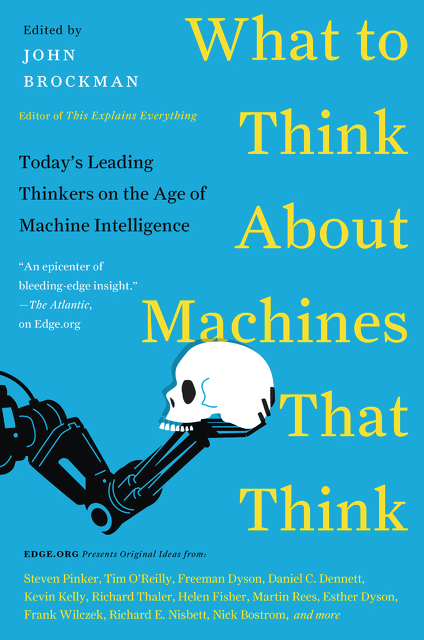

2015 : What do you think about machines that think?
Edge Annual Question Series
In recent years, the 1980s-era philosophical discussions about artificial intelligence (AI)—whether computers can "really" think, refer, be conscious, and so on—have led to new conversations about how we should deal with the forms that many argue actually are implemented. These "AIs", if they achieve "Superintelligence" (Nick Bostrom), could pose "existential risks" that lead to "Our Final Hour" (Martin Rees). And Stephen Hawking recently made international headlines when he noted "The development of full artificial intelligence could spell the end of the human race."
THE EDGE QUESTION—2015
WHAT DO YOU THINK ABOUT MACHINES THAT THINK?
But wait! Should we also ask what machines that think, or, "AIs", might be thinking about? Do they want, do they expect civil rights? Do they have feelings? What kind of government (for us) would an AI choose? What kind of society would they want to structure for themselves? Or is "their" society "our" society? Will we, and the AIs, include each other within our respective circles of empathy?
Numerous Edgies have been at the forefront of the science behind the various flavors of AI, either in their research or writings. AI was front and center in conversations between charter members Pamela McCorduck (Machines Who Think) and Isaac Asimov (Machines That Think) at our initial meetings in 1980. And the conversation has continued unabated, as is evident in the recent Edge feature "The Myth of AI", a conversation with Jaron Lanier, that evoked rich and provocative commentaries.
Is AI becoming increasingly real? Are we now in a new era of the "AIs"? To consider this issue, it's time to grow up. Enough already with the science fiction and the movies, Star Maker, Blade Runner, 2001, Her, The Matrix, "The Borg". Also, 80 years after Turing's invention of his Universal Machine, it's time to honor Turing, and other AI pioneers, by giving them a well-deserved rest. We know the history. (See George Dyson's 2004 Edge feature "Turing's Cathedral".) So, once again, this time with rigor, the Edge Question—2015:
WHAT DO YOU THINK ABOUT MACHINES THAT THINK?
John Brockman
Publisher & Editor, Edge